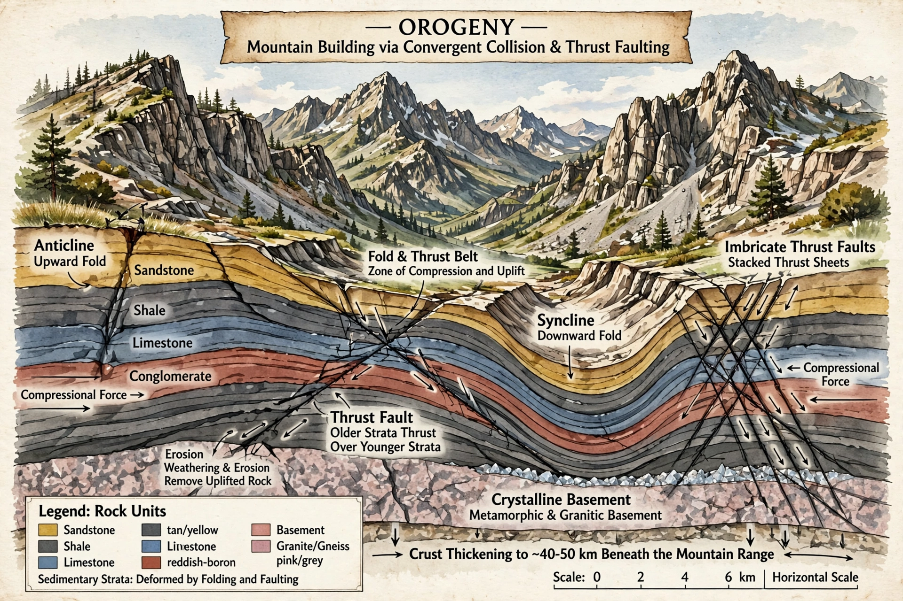

Orogeny is a mountain-building process in which a structurally distinct belt of the Earth's lithosphere (an orogen) is shortened and thickened by deformation, magmatism and metamorphism, principally at convergent plate boundaries. The word comes from Greek oros (mountain) + genesis (creation).

| Type | Geological process |
|---|---|
| Cause | Plate convergence |
Two classic types are subduction orogenesis (e.g., the Andes, where oceanic lithosphere subducts) and collisional orogenesis (e.g., the Himalayas, formed by India–Asia collision, and the Alps). Processes include thrust faulting, folding, crustal thickening, partial melting and emplacement of batholiths.
Geosynclinal theory dominated before plate tectonics in the 1960s explained orogens as plate-boundary phenomena. Major Phanerozoic orogenies include the Caledonian, Variscan/Hercynian, Cordilleran and Alpine-Himalayan.
Orogens are eroded, isostatically rebound, and may undergo extensional collapse. Their sedimentary products form foreland basins. See plate tectonics, Ordovician (Taconic orogeny).